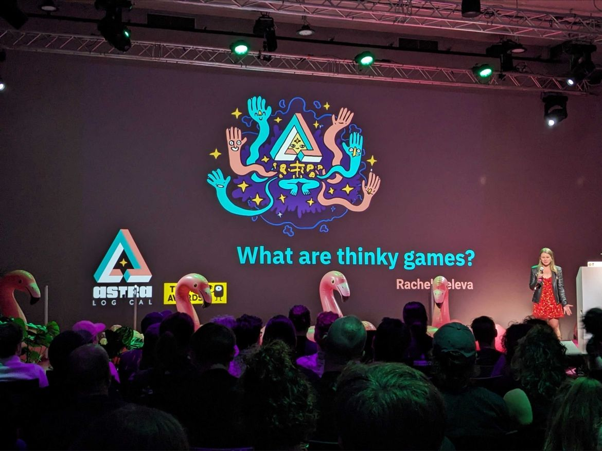

What Are Thinky Games?

A MAZE. / Berlin, 2024
I gave this Hyper Talk about the design philosophy behind Astra, which began as a philanthropic game fund with a fellowship program. I helped transition the fund into Astra Logical, an independent publisher, and helped shape and apply its design thesis through game scouting, genre research and developer relations.
Our ambition was cultural as much as commercial: we believed that bringing more thinky games into the world could help cultivate a culture of playful problem-solving.
What makes a game thinky?
Thinky is not a single genre. It describes an approach to designing play:
- Reasoning over reflexes. Give players the information and tools to work through problems rather than rely primarily on speed, luck or guessing.
- Learning through experimentation. Let players form hypotheses, test ideas and revise their understanding through play.
- Discovery through systems. Build mechanics whose interactions reveal surprising possibilities and reward deeper understanding.
- Creative problem-solving. Give players meaningful opportunities to devise strategies, recognize patterns and make connections.
- The pleasure of insight. Make the process of thinking itself rewarding.
This philosophy extends across puzzle games, programming games, resource management, engineering, tactics and deduction. Our work also involved mapping these genres and their audiences to understand where the design philosophy could find a broader commercial home.
I remain interested in what these games ask players to do intellectually, and how the systems we choose to fund and bring into culture might shape the way people approach problems. Craig G. Anderson and David DeLiema explore related questions through puzzle game research in their ThinkyCon talk, Playful Problem Solving.